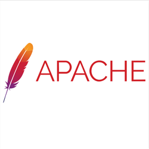
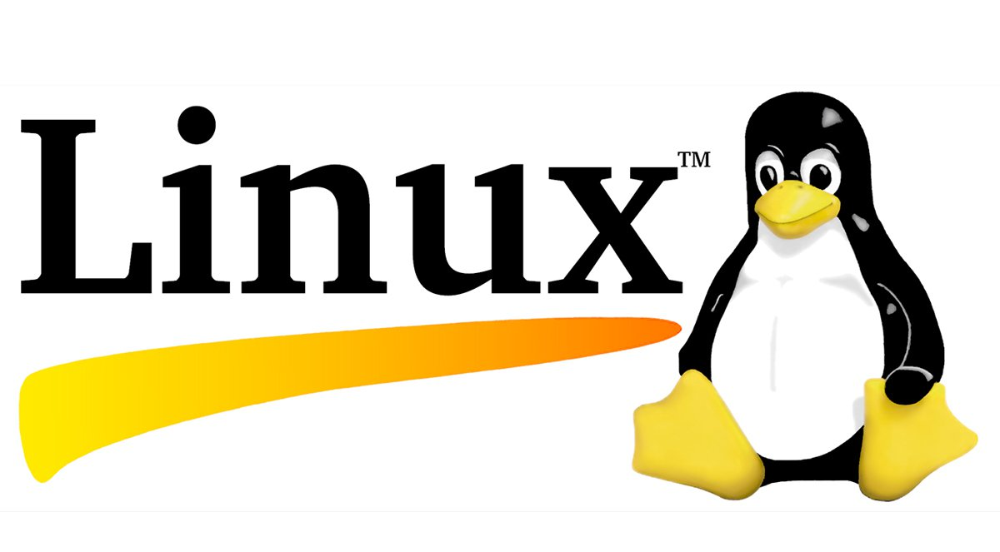

01. About

I'm a software engineer with a Master's in Computer Science from NYU and a B.E. in Computer Engineering from University of Mumbai. I care about backend systems, distributed infrastructure, and building tools that engineers actually want to use.
I've shipped production software across adtech (Media.net), AI-driven automation (SalesCaptain), and open source (Apache APISIX, Google Summer of Code). I'm drawn to problems that live at the boundary of correctness and scale.
When I'm not in a terminal, I'm probably reading, trying a new coffee roast, or grinding LeetCode.
languages
- Python
- JavaScript / TypeScript
- SQL
- Erlang
- Shell / Bash
infrastructure
- AWS (IAM, EC2, Glue, Athena)
- BigQuery / Databricks
- Kafka
- Docker / CI/CD
- Linux Kernel
frameworks & tools
- Vue 3 / Manifest V3
- Git / GitHub
- Tableau
- Apache APISIX
- REST APIs
02. Experience
Software Engineer
SalesCaptain Inc · New York, NY
Building full-stack AI-driven features for customer engagement automation — automated messaging, webchat, payment integrations, and phone automation. Owning backend system design and delivery end-to-end in a fast-paced startup environment.
Software Engineer Intern
SalesCaptain Inc · New York, NY
Created AI-driven solutions to enhance customer engagement. Optimized backend systems for advanced automation including follow-ups, reminders, and analytics. Collaborated across teams to refine AI-powered text generation and voice automation pipelines.
Software Engineer
NYU Wasserman Center · New York, NY
Developed a secure ticketing system using Python and integrated authentication protocols, reducing response times by 50%. Optimized NYU's cloud infrastructure achieving a 30% increase in scalability. Spearheaded real-time analytics pipelines for internal performance monitoring.
Software Engineer
Media.net · Mumbai, India
Led website migration projects and managed relational databases with statistical analysis, resulting in a 20% reduction in launch errors and $32K in savings. Acted as primary technical liaison reducing support ticket resolution by 30%. Optimized AWS infrastructure for performance and cost-efficiency at scale.
Software Engineer Intern
Apache Software Foundation · Remote
Developed a packaging tool for Apache APISIX that cut packaging time by 24% across major Linux distributions. Implemented CI/CD pipelines with Docker. Contributed production code to one of the world's largest open source foundations.
Research Intern
IIT Kanpur · Remote
Comparative analysis of Tor and Yggdrasil Networks across 1 million websites, contributing to findings in network performance metrics. Results published at ICICT 2022.
03. Projects
Real-Time Trip Analytics Platform
End-to-end ETL pipeline processing ride data into BigQuery for real-time analytics across revenue, distance, and usage trends. Automated data workflows reduce manual effort and improve reliability at scale.
Stock Market Streaming Pipeline
Kafka + AWS Glue streaming pipeline processing 100K+ trade records in real time. Analytics-ready datasets in Athena with Python/SQL transformations supporting trade volume, payment method, and trend analysis.
Chronicle — Chrome Extension
Manifest V3 Chrome extension built with Vue 3 and TypeScript for browsing history management and visualization. Full extension lifecycle: background workers, content scripts, popup UI, and storage APIs.
Tor vs Yggdrasil Network Analysis
Comparative analysis of privacy, latency, and scalability across 1 million websites. Quantified performance tradeoffs between anonymity-first and mesh-routing network architectures. Published at ICICT 2022.
Real-Time Object Detection (SSD + MobileNet)
Implemented Single Shot MultiBox Detector with MobileNet backbone, optimized for real-time inference on edge hardware. Benchmarked accuracy/latency tradeoffs across device classes.
04. Open Source

Google Summer of Code
view project ↗Erlang Ecosystem Foundation · 2021
Built a secure Yggdrasil client library for Erlang, enabling end-to-end encrypted mesh networking from the BEAM runtime. Independently scoped, designed, and delivered under Google/EEF mentorship. Awarded a recommendation letter from Google for exemplary open-source contribution.

Apache Software Foundation
view project ↗Apache APISIX · 2021
Contributed a packaging tool for Apache APISIX that reduced packaging time by 24% across Debian, Ubuntu, and CentOS. Implemented CI/CD pipelines with Docker to automate release workflows for one of the ASF's fastest-growing API gateway projects.

Linux Kernel
view contributions ↗kernel.org · Ongoing
Contributed patches targeting kernel-level optimizations and bug fixes, focusing on system call efficiency and concurrency handling. Navigated the kernel's mailing list review process and maintainer feedback cycles.
05. Writing
Building a Real-Time Trip Analytics Platform
End-to-end walkthrough of building an ETL pipeline from raw ride data to BigQuery-backed dashboards.
Building a Real-Time Stock Market Streaming Pipeline
Kafka + AWS Glue architecture for processing 100K+ trade records with low latency.
"Even death has a heart." — Markus Zusak
A reflection on The Book Thief — beauty, brutality, and the human condition as narrated by Death.
"For you, a thousand times over." — Khaled Hosseini
On redemption, loyalty, and friendship in The Kite Runner.